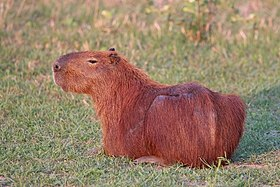

A capivara ou capincho (nome científico: hydrochaeris Hydrochoerus>) é uma espécie de mamífero roedor da família Caviidae e subfamília Hydrochoerinae. Alguns autores consideram que deva ser classificada em uma família própria.Está incluída no mesmo grupo de roedores ao qual se classificam as pacas, cutias, os preás e o porquinho-da-índia.Ocorre por toda a América do Sul ao leste dos Andes em habitats associados a rios, lagos e pântanos, do nível do mar até 1 300 m de altitude. Extremamente adaptável, pode ocorrer em ambientes altamente alterados pelo ser humano.
É o maior roedor do mundo, pesando até 91 kg e medindo até 1,2 m de comprimento e 60 cm de altura. A pelagem é densa, de cor avermelhada a marrom escuro. É possível distinguir os machos por conta da presença de uma glândula proeminente no focinho apesar de o dimorfismo sexual não ser aparente. Existe uma série de adaptações no sistema digestório à herbivoria, principalmente no ceco. Alcança a maturidade sexual com cerca de 1,5 ano de idade, e as fêmeas dão à luz geralmente a quatro filhotes por vez, pesando até 1,5 kg e já nascem com pelos e dentição permanente. Em cativeiro, pode viver até 12 anos de idade.
A capivara também é chamada de carpincho, capincho, beque, trombudo, caixa, cachapu, porco-capivara, cunum e cubu.O nome capivara procede do termo tupi kapi'wara, que significa "comedor de capim". Tal nome é o mais comum e conhecido por todo o Brasil. No Rio Grande do Sul também é conhecida por capincho ou carpincho, termo derivado do espanhol. No Amazonas, é conhecida por cupido e na Ilha de Marajó, no Pará, por beque. O macho, neste mesmo local, devido à glândula nasal no focinho, é chamado de trombudo, caixa ou cachapu. Em alguns locais do interior da Bahia, a capivara é chamada de porco-capivara, no sudeste do Pará por cunum e de cubu em alguns locais do estado de Goiás.